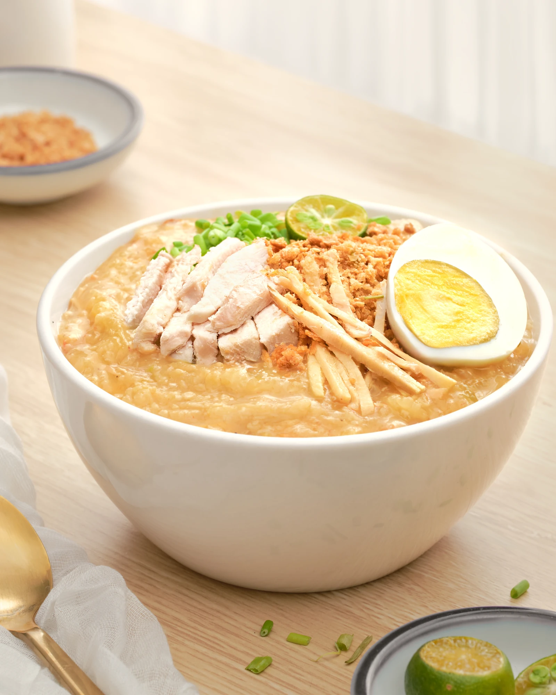
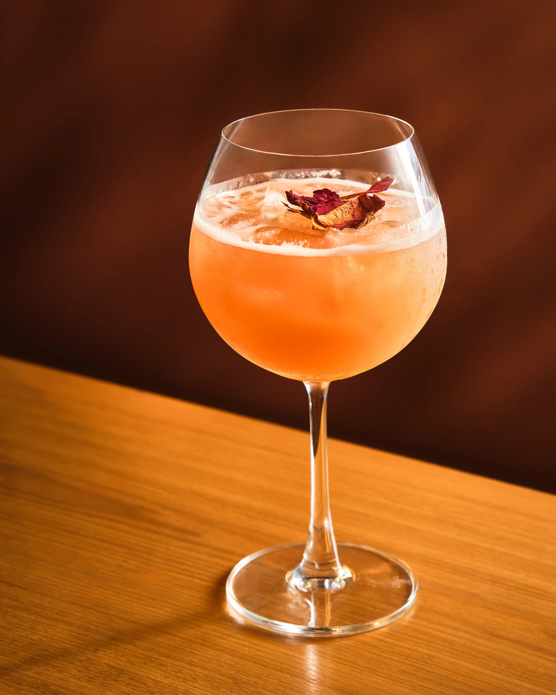
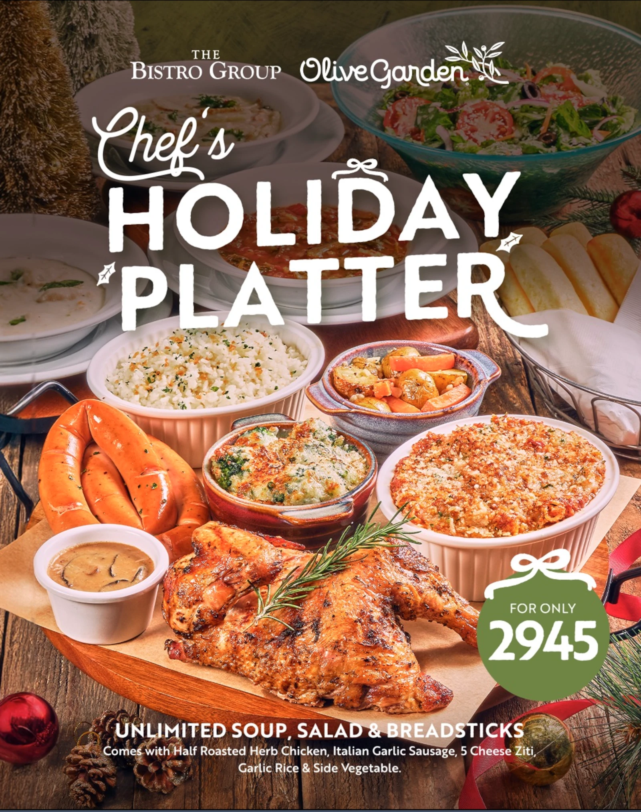
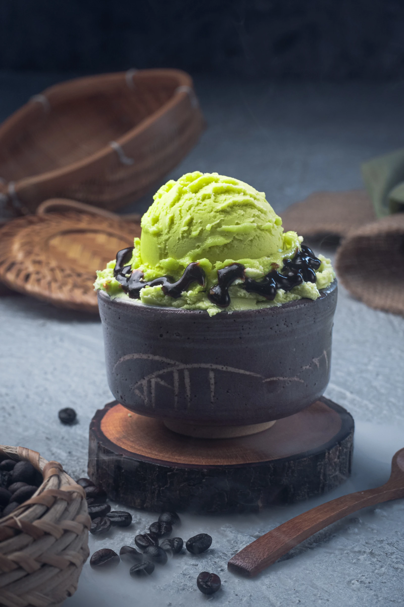
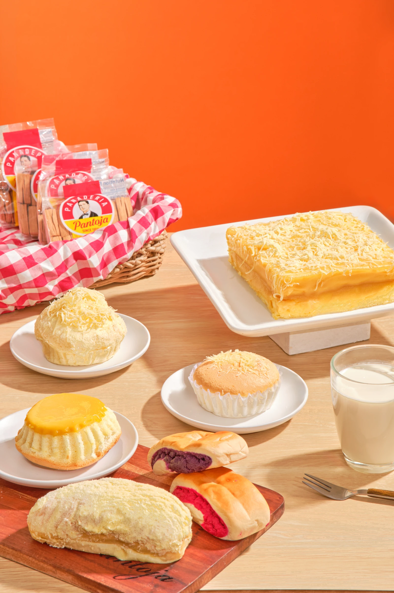
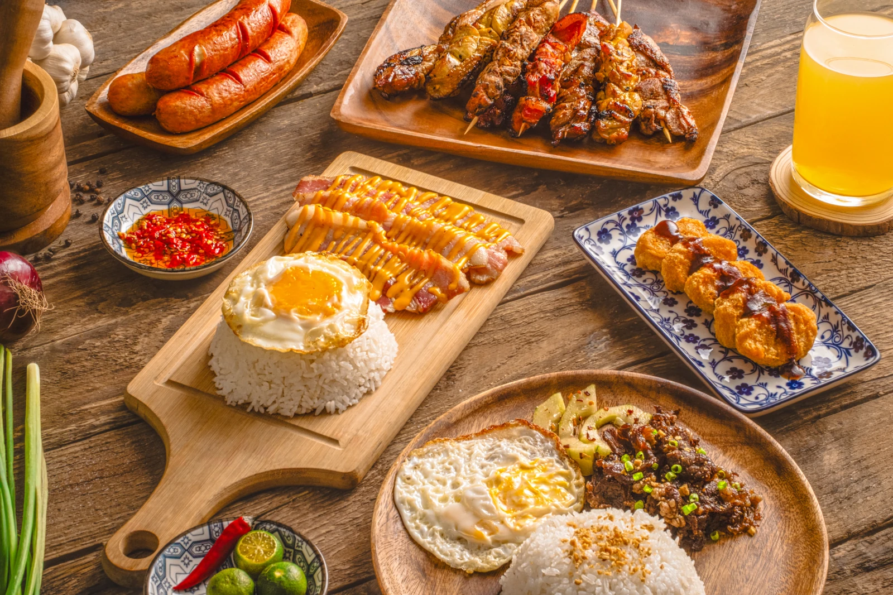
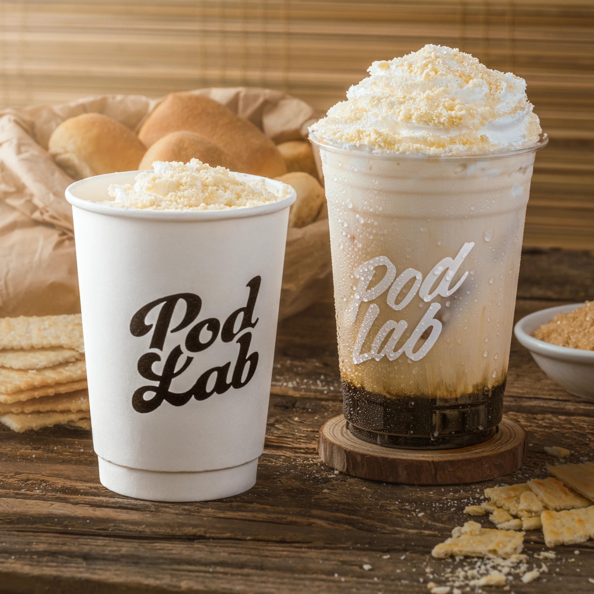
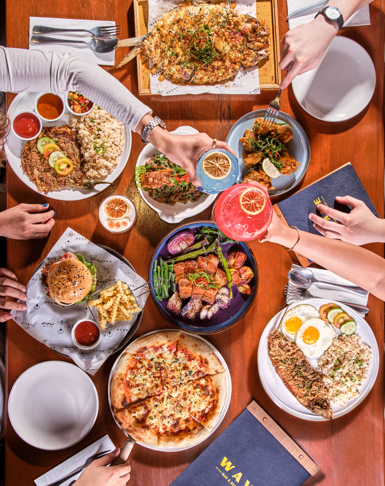
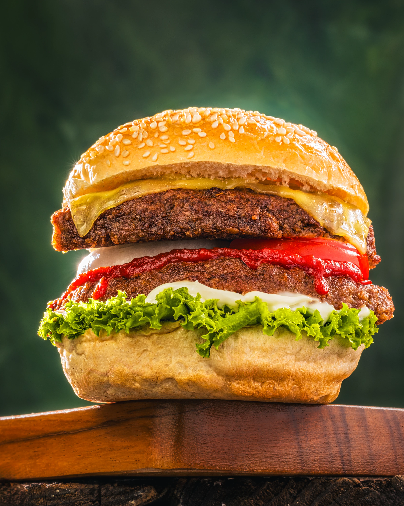
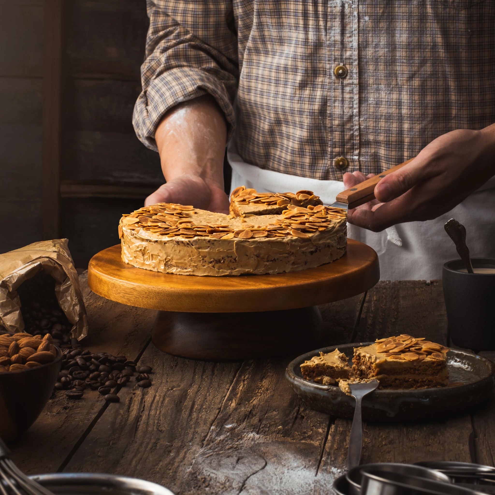

SIGNATURE COLLECTION
Selected Food Photography









From elegant fine dining to handcrafted beverages, every image is created to capture flavour, texture and atmosphere that inspires customers.
Great food photography is more than documenting a meal—it captures aroma, texture, atmosphere and the emotion behind every plate.
Working closely with chefs, restaurants and brands, every image is carefully styled and lit to create photographs that encourage people to stop, look and take the first bite with their eyes.









Every restaurant has its own identity. Through thoughtful lighting, composition and styling, our goal is to create photographs that reflect the atmosphere, craftsmanship, and passion behind every dish.
Whether you're launching a new menu, opening a restaurant, promoting seasonal specials, or refreshing your brand, professional photography can make every dish unforgettable.
Book a Food Shoot